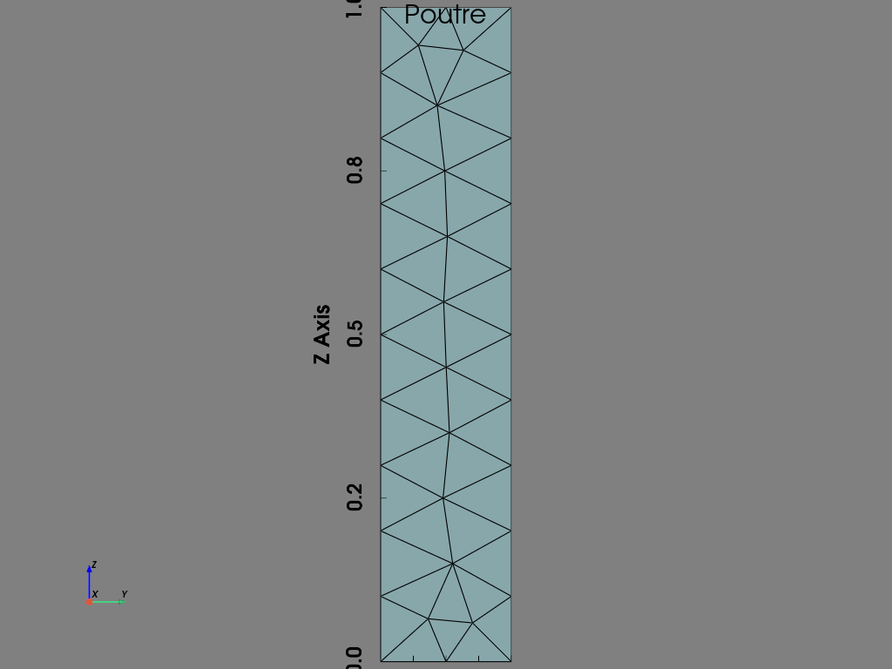

Projet 1#
import pyvista as pv
import dolfinx
from dolfinx import mesh, fem, plot, io, default_scalar_type
from dolfinx.fem.petsc import LinearProblem
from mpi4py import MPI
import ufl
import numpy as np
import gmsh
import meshio
from dolfinx.io import XDMFFile
import dolfinx.fem as fem
import dolfinx.mesh as mesh
from petsc4py import PETSc
# Initialisation de GMSH
gmsh.initialize()
gmsh.model.add("cylindre")
lc = 0.1 # Longueur caractéristique des éléments en mètres
# Créer un cylindre
#gmsh.model.occ.addCylinder(0, 0, 0, 0, 0, height, radius)
#gmsh.model.occ.addCylinder(0, 0, 0, 0, 0, height, radius)
# Exemple avec les dimensions spécifiques
a = 0 # Coordonnée x du coin inférieur gauche
b = 0 # Coordonnée y du coin inférieur gauche
L = 1 # Longueur dans la direction z
width = 0.2 # Largeur dans la direction x
height = 0.2 # Hauteur dans la direction y
gmsh.model.occ.addBox(a, b, 0, width, height, L)
# Synchronisation de la géométrie
gmsh.model.occ.synchronize()
# Définir les tailles des éléments
gmsh.option.setNumber("Mesh.CharacteristicLengthMin", lc)
gmsh.option.setNumber("Mesh.CharacteristicLengthMax", lc)
# Générer le maillage
gmsh.model.mesh.generate(3) # 3 pour le maillage en 3D
# Sauvegarder le maillage dans un fichier .msh
gmsh.write("cylindre.msh")
# Finaliser GMSH
gmsh.finalize()
# Lire le fichier .msh avec meshio
msh = meshio.read("cylindre.msh")
# Sauvegarder le maillage en format XDMF
meshio.write("cylindre.xdmf", meshio.Mesh(points=msh.points, cells={"tetra": msh.cells_dict.get("tetra", [])}))
# Lire le fichier .xdmf avec Dolfinx
with XDMFFile(MPI.COMM_WORLD, "cylindre.xdmf", "r") as xdmf_file:
domain = xdmf_file.read_mesh(name="Grid")
domain.topology.create_connectivity(domain.topology.dim-1, domain.topology.dim)
# Afficher des informations sur le maillage
print("Maillage créé avec succès.")
print(f"Nombre de sommets : {domain.topology.index_map(domain.topology.dim).size_global}")
print(f"Nombre d'éléments : {domain.topology.index_map(domain.topology.dim-1).size_global}")
---------------------------------------------------------------------------
ModuleNotFoundError Traceback (most recent call last)
Cell In[1], line 2
1 import pyvista as pv
----> 2 import dolfinx
3 from dolfinx import mesh, fem, plot, io, default_scalar_type
4 from dolfinx.fem.petsc import LinearProblem
ModuleNotFoundError: No module named 'dolfinx'
!pip install panel pyvista pyvista-panel
Requirement already satisfied: panel in /opt/anaconda3/envs/fenicsx-env/lib/python3.12/site-packages (1.5.3)
Requirement already satisfied: pyvista in /opt/anaconda3/envs/fenicsx-env/lib/python3.12/site-packages (0.43.10)
ERROR: Could not find a version that satisfies the requirement pyvista-panel (from versions: none)
[notice] A new release of pip is available: 24.2 -> 24.3.1
[notice] To update, run: pip install --upgrade pip
ERROR: No matching distribution found for pyvista-panel
!pip install panel
Collecting panel
Using cached panel-1.5.3-py3-none-any.whl.metadata (15 kB)
Requirement already satisfied: bleach in /opt/anaconda3/envs/fenicsx-env/lib/python3.12/site-packages (from panel) (6.1.0)
Collecting bokeh<3.7.0,>=3.5.0 (from panel)
Downloading bokeh-3.6.0-py3-none-any.whl.metadata (12 kB)
Collecting linkify-it-py (from panel)
Downloading linkify_it_py-2.0.3-py3-none-any.whl.metadata (8.5 kB)
Collecting markdown (from panel)
Downloading Markdown-3.7-py3-none-any.whl.metadata (7.0 kB)
Requirement already satisfied: markdown-it-py in /opt/anaconda3/envs/fenicsx-env/lib/python3.12/site-packages (from panel) (3.0.0)
Collecting mdit-py-plugins (from panel)
Using cached mdit_py_plugins-0.4.2-py3-none-any.whl.metadata (2.8 kB)
Requirement already satisfied: packaging in /opt/anaconda3/envs/fenicsx-env/lib/python3.12/site-packages (from panel) (24.1)
Requirement already satisfied: pandas>=1.2 in /opt/anaconda3/envs/fenicsx-env/lib/python3.12/site-packages (from panel) (2.2.2)
Collecting param<3.0,>=2.1.0 (from panel)
Downloading param-2.1.1-py3-none-any.whl.metadata (7.2 kB)
Collecting pyviz-comms>=2.0.0 (from panel)
Downloading pyviz_comms-3.0.3-py3-none-any.whl.metadata (7.7 kB)
Requirement already satisfied: requests in /opt/anaconda3/envs/fenicsx-env/lib/python3.12/site-packages (from panel) (2.32.3)
Requirement already satisfied: tqdm in /opt/anaconda3/envs/fenicsx-env/lib/python3.12/site-packages (from panel) (4.66.4)
Requirement already satisfied: typing-extensions in /opt/anaconda3/envs/fenicsx-env/lib/python3.12/site-packages (from panel) (4.12.2)
Requirement already satisfied: Jinja2>=2.9 in /opt/anaconda3/envs/fenicsx-env/lib/python3.12/site-packages (from bokeh<3.7.0,>=3.5.0->panel) (3.1.4)
Requirement already satisfied: contourpy>=1.2 in /opt/anaconda3/envs/fenicsx-env/lib/python3.12/site-packages (from bokeh<3.7.0,>=3.5.0->panel) (1.2.1)
Requirement already satisfied: numpy>=1.16 in /opt/anaconda3/envs/fenicsx-env/lib/python3.12/site-packages (from bokeh<3.7.0,>=3.5.0->panel) (1.26.4)
Requirement already satisfied: pillow>=7.1.0 in /opt/anaconda3/envs/fenicsx-env/lib/python3.12/site-packages (from bokeh<3.7.0,>=3.5.0->panel) (10.3.0)
Requirement already satisfied: PyYAML>=3.10 in /opt/anaconda3/envs/fenicsx-env/lib/python3.12/site-packages (from bokeh<3.7.0,>=3.5.0->panel) (6.0.1)
Requirement already satisfied: tornado>=6.2 in /opt/anaconda3/envs/fenicsx-env/lib/python3.12/site-packages (from bokeh<3.7.0,>=3.5.0->panel) (6.4.1)
Collecting xyzservices>=2021.09.1 (from bokeh<3.7.0,>=3.5.0->panel)
Downloading xyzservices-2024.9.0-py3-none-any.whl.metadata (4.1 kB)
Requirement already satisfied: python-dateutil>=2.8.2 in /opt/anaconda3/envs/fenicsx-env/lib/python3.12/site-packages (from pandas>=1.2->panel) (2.9.0)
Requirement already satisfied: pytz>=2020.1 in /opt/anaconda3/envs/fenicsx-env/lib/python3.12/site-packages (from pandas>=1.2->panel) (2024.1)
Requirement already satisfied: tzdata>=2022.7 in /opt/anaconda3/envs/fenicsx-env/lib/python3.12/site-packages (from pandas>=1.2->panel) (2024.1)
Requirement already satisfied: six>=1.9.0 in /opt/anaconda3/envs/fenicsx-env/lib/python3.12/site-packages (from bleach->panel) (1.16.0)
Requirement already satisfied: webencodings in /opt/anaconda3/envs/fenicsx-env/lib/python3.12/site-packages (from bleach->panel) (0.5.1)
Collecting uc-micro-py (from linkify-it-py->panel)
Downloading uc_micro_py-1.0.3-py3-none-any.whl.metadata (2.0 kB)
Requirement already satisfied: mdurl~=0.1 in /opt/anaconda3/envs/fenicsx-env/lib/python3.12/site-packages (from markdown-it-py->panel) (0.1.2)
Requirement already satisfied: charset-normalizer<4,>=2 in /opt/anaconda3/envs/fenicsx-env/lib/python3.12/site-packages (from requests->panel) (3.3.2)
Requirement already satisfied: idna<4,>=2.5 in /opt/anaconda3/envs/fenicsx-env/lib/python3.12/site-packages (from requests->panel) (3.7)
Requirement already satisfied: urllib3<3,>=1.21.1 in /opt/anaconda3/envs/fenicsx-env/lib/python3.12/site-packages (from requests->panel) (2.2.2)
Requirement already satisfied: certifi>=2017.4.17 in /opt/anaconda3/envs/fenicsx-env/lib/python3.12/site-packages (from requests->panel) (2024.7.4)
Requirement already satisfied: MarkupSafe>=2.0 in /opt/anaconda3/envs/fenicsx-env/lib/python3.12/site-packages (from Jinja2>=2.9->bokeh<3.7.0,>=3.5.0->panel) (2.1.5)
Downloading panel-1.5.3-py3-none-any.whl (27.4 MB)
━━━━━━━━━━━━━━━━━━━━━━━━━━━━━━━━━━━━━━━━ 27.4/27.4 MB 6.8 MB/s eta 0:00:0000:0100:01
?25hDownloading bokeh-3.6.0-py3-none-any.whl (6.9 MB)
━━━━━━━━━━━━━━━━━━━━━━━━━━━━━━━━━━━━━━━━ 6.9/6.9 MB 8.1 MB/s eta 0:00:0000:0100:01
?25hDownloading param-2.1.1-py3-none-any.whl (116 kB)
Downloading pyviz_comms-3.0.3-py3-none-any.whl (83 kB)
Downloading linkify_it_py-2.0.3-py3-none-any.whl (19 kB)
Downloading Markdown-3.7-py3-none-any.whl (106 kB)
Using cached mdit_py_plugins-0.4.2-py3-none-any.whl (55 kB)
Downloading xyzservices-2024.9.0-py3-none-any.whl (85 kB)
Downloading uc_micro_py-1.0.3-py3-none-any.whl (6.2 kB)
Installing collected packages: xyzservices, uc-micro-py, param, markdown, pyviz-comms, mdit-py-plugins, linkify-it-py, bokeh, panel
Successfully installed bokeh-3.6.0 linkify-it-py-2.0.3 markdown-3.7 mdit-py-plugins-0.4.2 panel-1.5.3 param-2.1.1 pyviz-comms-3.0.3 uc-micro-py-1.0.3 xyzservices-2024.9.0
[notice] A new release of pip is available: 24.2 -> 24.3.1
[notice] To update, run: pip install --upgrade pip
import pyvista as pv
import panel as pn
# Préparer les données (remplace par tes données)
u_topology, u_cell_types, u_geometry = plot.vtk_mesh(domain)
u_grid = pv.UnstructuredGrid(u_topology, u_cell_types, u_geometry)
# Configurer le Plotter PyVista
p = pv.Plotter(notebook=True)
p.add_mesh(u_grid, show_edges=True, scalar_bar_args={
"title": "u",
"title_font_size": 24,
"label_font_size": 22,
"shadow": True,
"italic": True,
"font_family": "arial",
"vertical": False
})
p.add_text("Poutre", font_size=12, color="black", position="upper_edge")
p.show_bounds(color="black")
p.add_axes(color="black")
p.set_background("grey")
p.view_yz()
# Afficher le Plotter dans Jupyter Book avec Panel
pn.panel(p.show(jupyter_backend='panel')).servable()

WARNING:param.Str00120: Displaying Panel objects in the notebook requires the panel extension to be loaded. Ensure you run pn.extension() before displaying objects in the notebook.
Str(None)
# Création du maillage pour PyVista basé sur les coordonnées des dofs
u_topology, u_cell_types, u_geometry = plot.vtk_mesh(domain)
# Créez la grille PyVista et ajoutez les valeurs des dofs à la grille
u_grid = pv.UnstructuredGrid(u_topology, u_cell_types, u_geometry)
# Visualisation
p = pv.Plotter()
#u_grid.point_data["u"] = uh.x.array.reshape((u_geometry.shape[0], 2))
#warped = u_grid.warp_by_scalar("u", factor=10)
p.add_mesh(u_grid, show_edges=True, scalar_bar_args={
"title": "u",
"title_font_size": 24,
"label_font_size": 22,
"shadow": True,
"italic": True,
"font_family": "arial",
"vertical": False
})
p.add_text("Poutre", font_size=12, color="black", position="upper_edge")
p.show_bounds(color="black")
p.add_axes(color="black")
p.set_background("grey")
p.show()
p.view_yz()
V = fem.functionspace(domain, ("Lagrange", 1, (domain.geometry.dim, )))
def clamped_boundary(x):
return np.isclose(x[2], 0)
def constraint_boundary(x):
return np.isclose(x[2], L)
def on_x_min_face(x):
return np.isclose(x[0], a)
def on_x_max_face(x):
return np.isclose(x[0], width)
def on_y_min_face(x):
return np.isclose(x[1], b)
def on_y_max_face(x):
return np.isclose(x[1], height)
#def create_marker_function(marker_function):
# return lambda x: marker_function(x)
# Créer les fonctions marqueurs pour chaque face
#on_x_min_face_marker = create_marker_function(on_x_min_face)
#on_x_max_face_marker = create_marker_function(on_x_max_face)
#on_y_min_face_marker = create_marker_function(on_y_min_face)
#on_y_max_face_marker = create_marker_function(on_y_max_face)
fdim = domain.topology.dim - 1
# Localiser les entités des frontières
boundary_down = mesh.locate_entities(domain, fdim, clamped_boundary)
boundary_top = mesh.locate_entities(domain, fdim, constraint_boundary)
boundary_x_min = mesh.locate_entities(domain, fdim, on_x_min_face)
boundary_x_max = mesh.locate_entities(domain, fdim, on_x_max_face)
boundary_y_min = mesh.locate_entities(domain, fdim, on_y_min_face)
boundary_y_max = mesh.locate_entities(domain, fdim, on_y_max_face)
u_D = np.array([0, 0, 0], dtype=default_scalar_type)
#u_D = np.array((0,) * domain.geometry.dim, dtype=default_scalar_type)
bc1 = fem.dirichletbc(u_D, fem.locate_dofs_topological(V, fdim, boundary_down), V)
bc2 = fem.dirichletbc(u_D, fem.locate_dofs_topological(V, fdim, boundary_top), V)
bc3 = fem.dirichletbc(u_D, fem.locate_dofs_topological(V, fdim, boundary_x_min), V)
bc4 = fem.dirichletbc(u_D, fem.locate_dofs_topological(V, fdim, boundary_x_max), V)
bc5 = fem.dirichletbc(u_D, fem.locate_dofs_topological(V, fdim, boundary_y_min), V)
bc6 = fem.dirichletbc(u_D, fem.locate_dofs_topological(V, fdim, boundary_y_max), V)
import numpy as np
# Définir une fonction pour appliquer des marqueurs
def apply_marker(boundary_facets, marker_array, marker_value):
boundary_facets = boundary_facets[boundary_facets < num_cells_local]
marker_array[boundary_facets] = marker_value
# Obtenir le nombre de cellules locales
num_cells_local = domain.topology.index_map(fdim).size_local
# Initialiser les tableaux de marqueurs
markers = [np.zeros(num_cells_local, dtype=np.int32) for _ in range(6)]
# Appliquer les marqueurs
apply_marker(boundary_down, markers[0], 1) # Marqueur 1
apply_marker(boundary_top, markers[1], 2) # Marqueur 2
apply_marker(boundary_x_min, markers[2], 3) # Marqueur 3
apply_marker(boundary_x_max, markers[3], 4) # Marqueur 4
apply_marker(boundary_y_min, markers[4], 5) # Marqueur 5
apply_marker(boundary_y_max, markers[5], 6) # Marqueur 6
# Créer la connectivité du domaine
domain.topology.create_connectivity(fdim, fdim)
# Obtenir les données de maillage pour PyVista
topology, cell_types, x = dolfinx.plot.vtk_mesh(domain, fdim, np.arange(num_cells_local, dtype=np.int32))
import pyvista as pv
import numpy as np
# Création du maillage PyVista
grid = pv.UnstructuredGrid(topology, cell_types, x)
# Fonction pour ajouter des maillages à une fenêtre
def add_plot(ax, marker, color, title, threshold_min):
# Mettre à jour les données de cellule du maillage
grid.cell_data["Marker"] = marker
grid.set_active_scalars("Marker")
# Ajouter le maillage avec les marqueurs
ax.add_mesh(grid, show_edges=True, color="cyan", scalar_bar_args={
"title": "Boundary Marker",
"title_font_size": 24,
"label_font_size": 22,
"shadow": True,
"italic": True,
"font_family": "arial",
"vertical": False
})
# Appliquer un filtre basé sur le seuil
grid_filter = grid.threshold(threshold_min, scalars='Marker')
ax.add_mesh(grid_filter, color=color, show_edges=True)
# Ajouter le texte et les axes
ax.add_text(title, font_size=12, color="black", position="upper_edge")
ax.add_axes(color="black")
# Visualisation avec PyVista
pl = pv.Plotter(shape=(2, 3))
# Fenêtre 1 : Afficher les cellules avec marker1
pl.subplot(0, 0)
add_plot(pl, markers[0], "red", "Down Boundary", threshold_min=0.5)
# Fenêtre 2 : Afficher les cellules avec marker2
pl.subplot(0, 1)
add_plot(pl, markers[1], "red", "Top Boundary", threshold_min=1.5)
# Fenêtre 3 : Afficher les cellules avec marker3
pl.subplot(0, 2)
add_plot(pl, markers[2], "red", "Lateral x min", threshold_min=2.5)
# Fenêtre 4 : Afficher les cellules avec marker4
pl.subplot(1, 0)
add_plot(pl, markers[3], "red", "Lateral x max", threshold_min=3.5)
# Fenêtre 5 : Afficher les cellules avec marker5
pl.subplot(1, 1)
add_plot(pl, markers[4], "red", "Lateral y min", threshold_min=4.5)
# Fenêtre 6 : Afficher les cellules avec marker6
pl.subplot(1, 2)
add_plot(pl, markers[5], "red", "Lateral y max", threshold_min=5.5)
# Configuration finale
pl.set_background("grey")
pl.show()
T = fem.Constant(domain, default_scalar_type((0, 0.1, 0)))
# Marqueurs des facettes
marked_facets = np.hstack([boundary_top])
#marked_values = np.hstack([np.full_like(boundary_down, 1), np.full_like(boundary_top, 2)])
marked_values = np.hstack([np.full_like(boundary_top, 1)])
# Tri des facettes et valeurs
sorted_facets = np.argsort(marked_facets)
facet_tag = dolfinx.mesh.meshtags(domain, domain.topology.dim - 1, marked_facets[sorted_facets], marked_values[sorted_facets])
# Définir une mesure pour les facettes marquées
ds = ufl.Measure('ds', domain=domain, subdomain_data=facet_tag)
def epsilon(u):
return ufl.sym(ufl.grad(u)) # Equivalent to 0.5*(ufl.nabla_grad(u) + ufl.nabla_grad(u).T) ou 0.5 * (ufl.grad(u).T + ufl.grad(u))
mu = 1
lambda_ = 1.25
def sigma(u):
return lambda_ * ufl.nabla_div(u) * ufl.Identity(len(u)) + 2 * mu * epsilon(u)
u = ufl.TrialFunction(V)
v = ufl.TestFunction(V)
# Extraire les composantes du gradient et les assembler en un vecteur
grad_u = ufl.grad(u)
grad_u_vec = ufl.as_vector([grad_u[0, 0], grad_u[1, 1], grad_u[2, 2]])
product_vectoriel = ufl.cross(v, grad_u_vec)
f = fem.Constant(domain, default_scalar_type((0, 0, 0)))
a = ufl.inner(sigma(u), epsilon(v)) * ufl.dx
L = ufl.dot(f, v) * ufl.dx + ufl.dot(T, v) * ds(1) # Terme de force volumique, pression et moment de torsion
problem = LinearProblem(a, L, bcs=[bc1], petsc_options={"ksp_type": "cg", "pc_type": "jacobi"})
#problem = LinearProblem(a, L, bcs=[bc1], petsc_options={"ksp_type": "preonly", "pc_type": "lu"})
uh = problem.solve()
# Création du maillage pour PyVista basé sur les coordonnées des dofs
u_topology, u_cell_types, u_geometry = plot.vtk_mesh(domain)
# Créez la grille PyVista et ajoutez les valeurs des dofs à la grille
u_grid = pv.UnstructuredGrid(u_topology, u_cell_types, u_geometry)
# Convertir le vecteur de solution en format compatible pour PyVista
uh_vectors = uh.x.array.reshape((-1, domain.geometry.dim))
# Attach vector values to grid and warp grid by vector
u_grid["u"] = uh.x.array.reshape((u_geometry.shape[0], 3))
# Visualisation
p = pv.Plotter()
p.add_mesh(u_grid, show_edges=True, scalar_bar_args={
"title": "u",
"title_font_size": 24,
"label_font_size": 22,
"shadow": True,
"italic": True,
"font_family": "arial",
"vertical": False
})
p.add_text("Déplacements", font_size=12, color="black", position="upper_edge")
p.add_axes(color="black")
p.set_background("grey")
p.show()
dargs = dict(
scalars="u",
cmap="jet",
show_scalar_bar=False,
)
pl = pv.Plotter(shape=(2, 2))
pl.subplot(0, 0)
pl.add_mesh(u_grid, **dargs)
pl.add_axes(color="black")
pl.add_text("Normalized Displacement", color='k')
pl.subplot(0, 1)
pl.add_mesh(u_grid.copy(), component=0, **dargs)
pl.add_axes(color="black")
pl.add_text("X Displacement", color='k')
pl.subplot(1, 0)
pl.add_mesh(u_grid.copy(), component=1, **dargs)
pl.add_axes(color="black")
pl.add_text("Y Displacement", color='k')
pl.subplot(1, 1)
pl.add_mesh(u_grid.copy(), component=2, **dargs)
pl.add_axes(color="black")
pl.add_text("Z Displacement", color='k')
# Lier les vues pour une vue cohérente
pl.link_views()
pl.camera_position = 'iso'
pl.background_color = 'grey'
# Afficher le tout
pl.show()
###### Visualisation
p = pv.Plotter()
warped = u_grid.warp_by_vector("u", factor=0.1)
p.add_mesh(warped, show_edges=False, scalar_bar_args={
"title": "u",
"title_font_size": 24,
"label_font_size": 22,
"shadow": True,
"italic": True,
"font_family": "arial",
"vertical": False
})
p.add_text("Déplacements", font_size=12, color="black", position="upper_edge")
p.show_bounds(color="black")
p.add_axes(color="black")
p.set_background("grey")
p.show()
import pyvista as pv
import numpy as np
import dolfinx
import ufl
from petsc4py import PETSc
from mpi4py import MPI
import matplotlib.pyplot as plt
# Calculer le tenseur de déformation
eps = epsilon(uh)
# Extraire les composantes du tenseur de déformation
eps_xx = eps[0, 0]
eps_xy = eps[0, 1]
eps_xz = eps[0, 2]
eps_yy = eps[1, 1]
eps_yz = eps[1, 2]
eps_zz = eps[2, 2]
# Créez la grille PyVista
eps_topology, eps_cell_types, eps_geometry = dolfinx.plot.vtk_mesh(domain)
eps_grid = pv.UnstructuredGrid(eps_topology, eps_cell_types, eps_geometry)
V_eps = fem.functionspace(domain, ("DG", 0))
eps_xx_expr = fem.Expression(eps_xx, V_eps.element.interpolation_points())
strain_xx = fem.Function(V_eps)
strain_xx.interpolate(eps_xx_expr)
eps_yy_expr = fem.Expression(eps_yy, V_eps.element.interpolation_points())
strain_yy = fem.Function(V_eps)
strain_yy.interpolate(eps_yy_expr)
eps_zz_expr = fem.Expression(eps_zz, V_eps.element.interpolation_points())
strain_zz = fem.Function(V_eps)
strain_zz.interpolate(eps_zz_expr)
eps_yz_expr = fem.Expression(eps_yz, V_eps.element.interpolation_points())
strain_yz = fem.Function(V_eps)
strain_yz.interpolate(eps_yz_expr)
eps_xz_expr = fem.Expression(eps_xz, V_eps.element.interpolation_points())
strain_xz = fem.Function(V_eps)
strain_xz.interpolate(eps_xz_expr)
eps_xy_expr = fem.Expression(eps_xy, V_eps.element.interpolation_points())
strain_xy = fem.Function(V_eps)
strain_xy.interpolate(eps_xy_expr)
pl = pv.Plotter(shape=(2, 3))
warped = u_grid.warp_by_vector("u", factor=0)
dargs = dict(
cmap="jet",
show_scalar_bar=False,
)
pl.subplot(0, 0)
warped.cell_data["Epsilon_XX"] = strain_xx.vector.array
warped.set_active_scalars("Epsilon_XX")
pl.add_mesh(warped, **dargs)
pl.add_axes(color="black")
pl.add_text("Epsilon XX", color='k')
pl.subplot(0, 1)
warped.cell_data["Epsilon_YY"] = strain_yy.vector.array
warped.set_active_scalars("Epsilon_YY")
pl.add_mesh(warped, **dargs)
pl.add_axes(color="black")
pl.add_text("Epsilon YY", color='k')
pl.subplot(0, 2)
warped.cell_data["Epsilon_ZZ"] = strain_zz.vector.array
warped.set_active_scalars("Epsilon_ZZ")
pl.add_mesh(warped, **dargs)
pl.add_axes(color="black")
pl.add_text("Epsilon ZZ", color='k')
pl.subplot(1, 0)
warped.cell_data["Epsilon_YZ"] = strain_yz.vector.array
warped.set_active_scalars("Epsilon_YZ")
pl.add_mesh(warped, **dargs)
pl.add_axes(color="black")
pl.add_text("Epsilon YZ", color='k')
pl.subplot(1, 1)
warped.cell_data["Epsilon_XZ"] = strain_xz.vector.array
warped.set_active_scalars("Epsilon_XZ")
pl.add_mesh(warped, **dargs)
pl.add_axes(color="black")
pl.add_text("Epsilon XZ", color='k')
pl.subplot(1, 2)
warped.cell_data["Epsilon_XY"] = strain_xy.vector.array
warped.set_active_scalars("Epsilon_XY")
pl.add_mesh(warped, **dargs)
pl.add_axes(color="black")
pl.add_text("Epsilon XY", color='k')
# Lier les vues pour une vue cohérente
pl.link_views()
pl.camera_position = 'iso'
pl.background_color = 'grey'
# Afficher le tout
pl.show()
import pyvista as pv
import numpy as np
import dolfinx
import ufl
from petsc4py import PETSc
from mpi4py import MPI
import matplotlib.pyplot as plt
# Calculer le tenseur de déformation
def omega(u):
return 0.5 * (ufl.grad(u).T - ufl.grad(u))
# Calculer le tenseur de déformation
theta = omega(uh)
# Extraire les composantes du tenseur de déformation
theta_xx = theta[0, 0]
theta_xy = theta[0, 1]
theta_xz = theta[0, 2]
theta_yy = theta[1, 1]
theta_yz = theta[1, 2]
theta_zz = theta[2, 2]
# Créez la grille PyVista
theta_topology, theta_cell_types, theta_geometry = dolfinx.plot.vtk_mesh(domain)
eps_grid = pv.UnstructuredGrid(theta_topology, theta_cell_types, theta_geometry)
V_omega = fem.functionspace(domain, ("DG", 0))
# Calculer la norme de rotation
norm_theta = ufl.sqrt(theta_xx**2 + theta_yy**2 + theta_zz**2)
rotation_expr = fem.Expression(norm_theta, V_omega.element.interpolation_points())
rotation_norm= fem.Function(V_omega)
rotation_norm.interpolate(rotation_expr)
rotation_expr = fem.Expression(theta_yz, V_omega.element.interpolation_points())
rotation_x = fem.Function(V_omega)
rotation_x.interpolate(rotation_expr)
rotation_expr = fem.Expression(theta_xz, V_omega.element.interpolation_points())
rotation_y = fem.Function(V_omega)
rotation_y.interpolate(rotation_expr)
rotation_expr = fem.Expression(theta_xy, V_omega.element.interpolation_points())
rotation_z = fem.Function(V_omega)
rotation_z.interpolate(rotation_expr)
pl = pv.Plotter(shape=(2, 2))
dargs = dict(
cmap="jet",
show_scalar_bar=False,
)
pl.subplot(0, 0)
warped.cell_data["Normal"] = rotation_norm.vector.array
warped.set_active_scalars("Normal")
pl.add_mesh(warped, **dargs)
pl.add_axes(color="black")
pl.add_text("Normalized rotation", color='k')
pl.subplot(0, 1)
warped.cell_data["RX"] = rotation_x.vector.array
warped.set_active_scalars("RX")
pl.add_mesh(warped, **dargs)
pl.add_axes(color="black")
pl.add_text("rotation RX", color='k')
pl.subplot(1, 0)
warped.cell_data["RY"] = rotation_y.vector.array
warped.set_active_scalars("RY")
pl.add_mesh(warped, **dargs)
pl.add_axes(color="black")
pl.add_text("rotation RY", color='k')
pl.subplot(1, 1)
warped.cell_data["RZ"] = rotation_z.vector.array
warped.set_active_scalars("RZ")
pl.add_mesh(warped, **dargs)
pl.add_axes(color="black")
pl.add_text("rotation RZ", color='k')
# Lier les vues pour une vue cohérente
pl.link_views()
pl.camera_position = 'iso'
pl.background_color = 'grey'
# Afficher le tout
pl.show()
import pyvista as pv
import numpy as np
import dolfinx
import ufl
from petsc4py import PETSc
from mpi4py import MPI
import matplotlib.pyplot as plt
# Calculer le tenseur de déformation
sig = sigma(uh)
# Extraire les composantes du tenseur de déformation
sig_xx = sig[0, 0]
sig_xy = sig[0, 1]
sig_xz = sig[0, 2]
sig_yy = sig[1, 1]
sig_yz = sig[1, 2]
sig_zz = sig[2, 2]
V_sig = fem.functionspace(domain, ("DG", 0))
sig_xx_expr = fem.Expression(sig_xx, V_sig.element.interpolation_points())
stress_xx = fem.Function(V_sig)
stress_xx.interpolate(sig_xx_expr)
sig_yy_expr = fem.Expression(sig_yy, V_sig.element.interpolation_points())
stress_yy = fem.Function(V_sig)
stress_yy.interpolate(sig_yy_expr)
sig_zz_expr = fem.Expression(sig_zz, V_sig.element.interpolation_points())
stress_zz = fem.Function(V_sig)
stress_zz.interpolate(sig_zz_expr)
sig_yz_expr = fem.Expression(sig_yz, V_sig.element.interpolation_points())
stress_yz = fem.Function(V_sig)
stress_yz.interpolate(sig_yz_expr)
sig_xz_expr = fem.Expression(sig_xz, V_sig.element.interpolation_points())
stress_xz = fem.Function(V_sig)
stress_xz.interpolate(sig_xz_expr)
sig_xy_expr = fem.Expression(sig_xy, V_sig.element.interpolation_points())
stress_xy = fem.Function(V_sig)
stress_xy.interpolate(sig_xy_expr)
pl = pv.Plotter(shape=(2, 3))
dargs = dict(
cmap="jet",
show_scalar_bar=False,
)
pl.subplot(0, 0)
warped.cell_data["Sigma_XX"] = stress_xx.vector.array
warped.set_active_scalars("Sigma_XX")
pl.add_mesh(warped, **dargs)
pl.add_axes(color="black")
pl.add_text("Sigma XX", color='k')
pl.subplot(0, 1)
warped.cell_data["Sigma_YY"] = stress_yy.vector.array
warped.set_active_scalars("Sigma_YY")
pl.add_mesh(warped, **dargs)
pl.add_axes(color="black")
pl.add_text("Sigma YY", color='k')
pl.subplot(0, 2)
warped.cell_data["Sigma_ZZ"] = stress_zz.vector.array
warped.set_active_scalars("Sigma_ZZ")
pl.add_mesh(warped, **dargs)
pl.add_axes(color="black")
pl.add_text("Sigma ZZ", color='k')
pl.subplot(1, 0)
warped.cell_data["Sigma_YZ"] = stress_yz.vector.array
warped.set_active_scalars("Sigma_YZ")
pl.add_mesh(warped, **dargs)
pl.add_axes(color="black")
pl.add_text("Sigma YZ", color='k')
pl.subplot(1, 1)
warped.cell_data["Sigma_XZ"] = stress_xz.vector.array
warped.set_active_scalars("Sigma_XZ")
pl.add_mesh(warped, **dargs)
pl.add_axes(color="black")
pl.add_text("Sigma XZ", color='k')
pl.subplot(1, 2)
warped.cell_data["Sigma_XY"] = stress_xy.vector.array
warped.set_active_scalars("Sigma_XY")
pl.add_mesh(warped, **dargs)
pl.add_axes(color="black")
pl.add_text("Sigma XY", color='k')
# Lier les vues pour une vue cohérente
pl.link_views()
pl.camera_position = 'iso'
pl.background_color = 'grey'
# Afficher le tout
pl.show()
s = sigma(uh) - 1. / 3 * ufl.tr(sigma(uh)) * ufl.Identity(len(uh))
von_Mises = ufl.sqrt(3. / 2 * ufl.inner(s, s))
V_von_mises = fem.functionspace(domain, ("DG", 0))
stress_expr = fem.Expression(von_Mises, V_von_mises.element.interpolation_points())
stresses = fem.Function(V_von_mises)
stresses.interpolate(stress_expr)
# Créez une nouvelle instance de Plotter
warped.cell_data["VonMises"] = stresses.vector.array
warped.set_active_scalars("VonMises")
p = pv.Plotter()
p.add_mesh(warped, cmap="jet", show_edges=False, scalar_bar_args={
"title": "Von Mises",
"title_font_size": 24,
"label_font_size": 22,
"shadow": True,
"italic": True,
"font_family": "arial",
"vertical": False
})
p.add_text("Von Mises", font_size=12, color="black", position="upper_edge")
p.add_axes(color="black")
p.set_background("grey")
p.show()
import pyvista as pv
import numpy as np
import dolfinx
import ufl
from petsc4py import PETSc
from mpi4py import MPI
import matplotlib.pyplot as plt
# Calculer le tenseur de déformation
def epsilon(u):
return 0.5 * (ufl.grad(u).T + ufl.grad(u))
# Calculer le tenseur de déformation
eps = epsilon(uh)
# Créer un espace de fonctions pour les données projetées
V_eps = V
# Créer une fonction pour stocker les résultats projetés
def create_function_from_expression(eps_component, V):
func = dolfinx.fem.Function(V)
expr = dolfinx.fem.Expression(eps_component, V.element.interpolation_points())
func.interpolate(expr)
return func
# Extraire les composantes du tenseur de déformation
eps_xx = sig[0, 0]
eps_xy = sig[0, 1]
eps_xz = sig[0, 2]
eps_yy = sig[1, 1]
eps_yz = sig[1, 2]
eps_zz = sig[2, 2]
# Projeter chaque composante du tenseur de déformation dans l'espace de fonctions
components = [eps_xx, eps_xy, eps_xz, eps_yy, eps_yz, eps_zz]
component_names = ['Epsilon_XX', 'Epsilon_XY', 'Epsilon_XZ', 'Epsilon_YY', 'Epsilon_YZ', 'Epsilon_ZZ']
# Créez la grille PyVista
eps_topology, eps_cell_types, eps_geometry = dolfinx.plot.vtk_mesh(domain)
eps_grid = pv.UnstructuredGrid(eps_topology, eps_cell_types, eps_geometry)
# Ajouter chaque composante à la grille PyVista
#for i, (component, name) in enumerate(zip(components, component_names)):
# component_func = create_function_from_expression(component, V_eps)
# eps_grid[name] = component_func.x.array
V_von_mises = fem.functionspace(domain, ("DG", 0))
stress_expr = fem.Expression(eps_zz, V_von_mises.element.interpolation_points())
stresses = fem.Function(V_von_mises)
stresses.interpolate(stress_expr)
# Créez une nouvelle instance de Plotter
p = pv.Plotter()
warped.cell_data["VonMises"] = stresses.vector.array
warped.set_active_scalars("VonMises")
p.add_mesh(warped, show_edges=False, scalar_bar_args={
"title": "Von Mises",
"title_font_size": 24,
"label_font_size": 22,
"shadow": True,
"italic": True,
"font_family": "arial",
"vertical": False
})
p.add_text("Von Mises", font_size=12, color="black", position="upper_edge")
p.add_axes(color="black")
p.set_background("grey")
p.show()